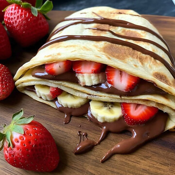

Creppes with chocolate and bananas

These are the fluffiest creppes You have ever tasted in Your life!
Enjoy these easy Chocolate Crepesfor breakfast, brunch or dessert and turn any day into a special
one. Fill them any way you like with whipped cream, fresh fruit, nutella, jam, cookie butter, or just simply dusted
with powdered sugar!
Looking for more breakfast and brunch inspiration? Be sure not to miss my other recipes on my recipe page!
- 4 eggs (M or L)
- 60g sugar (3/4 dl)
- 200g flour (3,3 dl)
- a pint of salt
- 5dl milk
- 50g melted butter
- Whisk eggs with sugar.
- Add flover, milk and salt to the mix and mix it even.
- Lastly, add melted butter, mix thoroughly.
- Heat large pan, add proper amount of dough and bake couple of minutes on average heat.
- Flip the creppe and beak from the other side aswell.